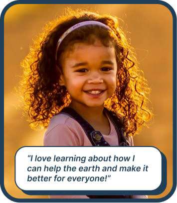
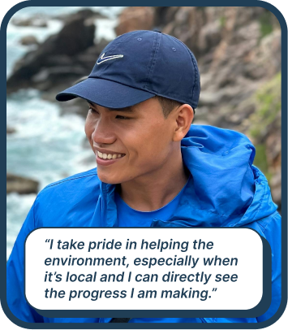
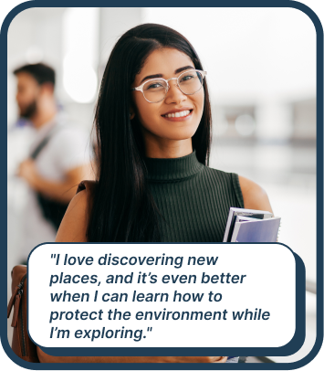

Overview
As part of the ROC the Riverway project, Rochester High Falls is being renovated and transformed into a New York State Park. The mission of HIgh Falls State Park is to create a center for ecological education while creating connectivity within downtown Rochester.
The Challenge
The existing platform had a 68% abandonment rate on critical tasks. Patients found it confusing, and
providers spent too much time clicking through systems. We needed to clear the weeds and plant something
that would actually grow.
Project Goals
- Education:Making environmental learning accessible and engaging
- Ecology:Teaching visitors about local ecosystems and wildlife
- Connectivity:Bridging downtown Rochester with natural education
Research & Discovery
Understanding Our Users
I identified three primary user groups with distinct needs and behaviors:
User Groups

Curious Learners
5-17
- Interested in learning more about the environment
- Shorter attention span
- May not know how to read
- May not have a phone

Environmental Activists
18-65
- Looking for ways to help with the environment
- Looking for easier and more intuitive ways to learn about the environment

Conscious Travelers
18-65
- Traveling to Rochester
- Interested in learning how to help the environment
- Looking for more engaging education and insights to local landmarks
Design Process
I chose to organize the kiosk into different sections that will address different learning goals and styles.
Main Sections
- River Health ...
- Animals: ...
- Games: ...
- How Can I Help? ...
The Harvest
The final design bloomed into an intuitive, accessible experience that users love. Clean interfaces,
thoughtful interactions, and a visual language that builds trust.
🌻
Impact & Growth
45%
Increase in Conversions
60%
Faster Task Completion
4.8/5
User Satisfaction Score
Explore More
Want to see what else is growing in the garden?